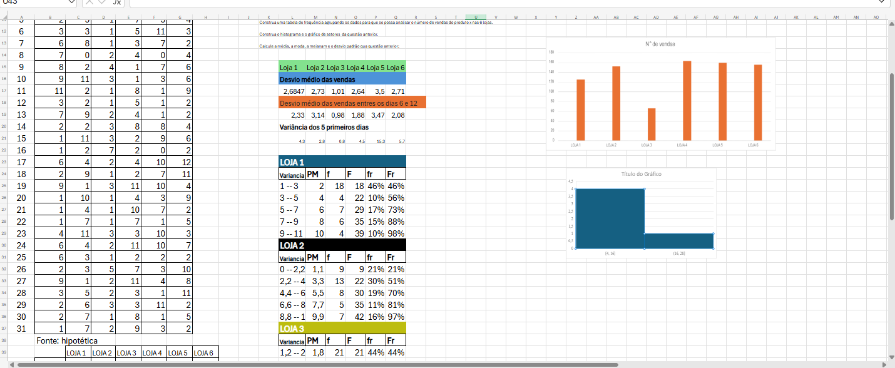

Atividade - Estatísticas de Vendas
Está atividade foi muito interessante, pois revemos calculo de desvio médio, desvio padrão, variancia e entre outros, para calular a estatistica de vendas pelo de das franquias de um mes e graças a ajuda também de alguns conhecimentos de codigos do Excel.